1
First light
Rise before the noise. Set the frequency before the day sets it for you. Name what is already given until the body believes it.
A meadow at 5:39 in the morning. The Peaks before the cloud lifts.


For the one who is settled, and wants tools to cross hard ground, to do even more, and to make a difference for the generations to come. It begins with one sitting a morning, by the water.
A gift: Morning Water. Eleven minutes, open to everyone, no sign-up →
A game: The Crossing. Five minutes, then a story by the fire →
In four. Hold four. Out six. Hold four. Three rounds, then the creek. Turn the sound on and the water, the wind and the fire follow you down the page.
Did your shoulders drop? The door is open.
Five minutes, in Tony’s own words: what is inside Ancestral Peaks, how the app works, and what it does for you.
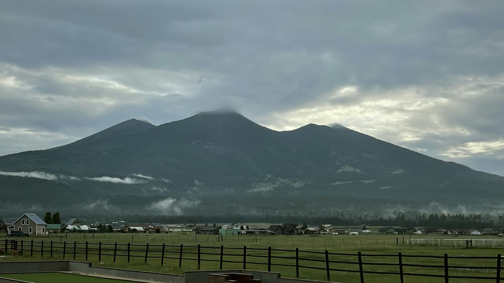
The practice of the far messengers, one calm session at a time. Guided sessions from two minutes to forty-three, the Eight Weeks, and readings from the books.
The far messengers of other peoples in this film are drawn with AI. The water, the land and the app are our own.
Today
You do not make the calm. You retrieve it. You store it in your bones in the quiet days.
From the first crossing. A new line, and a new photograph, every morning.
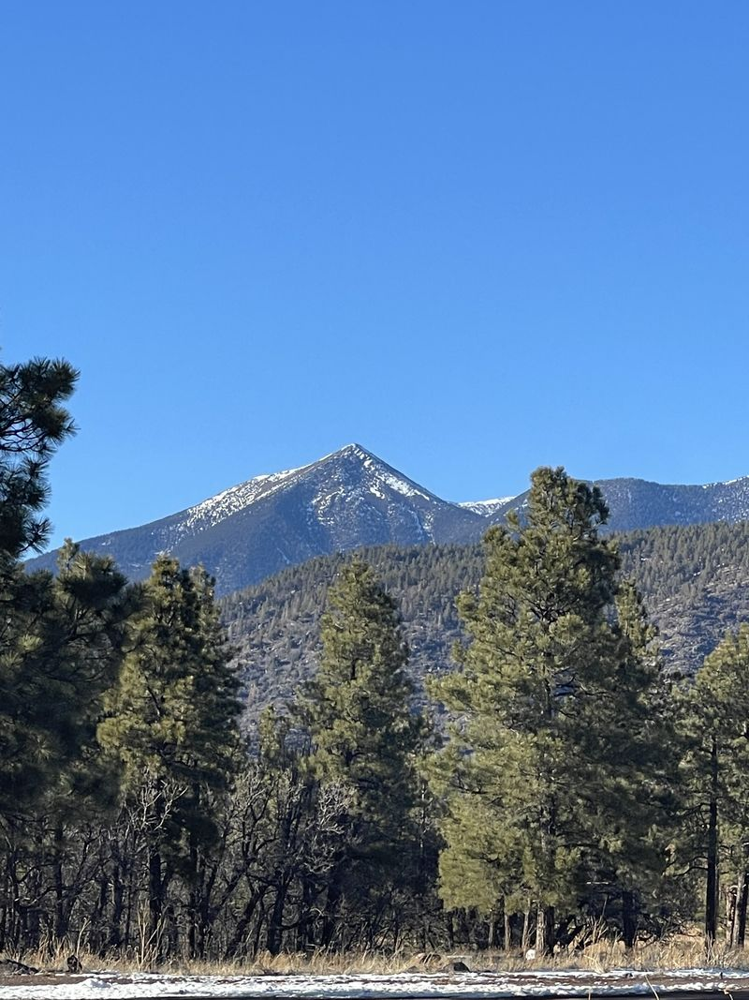

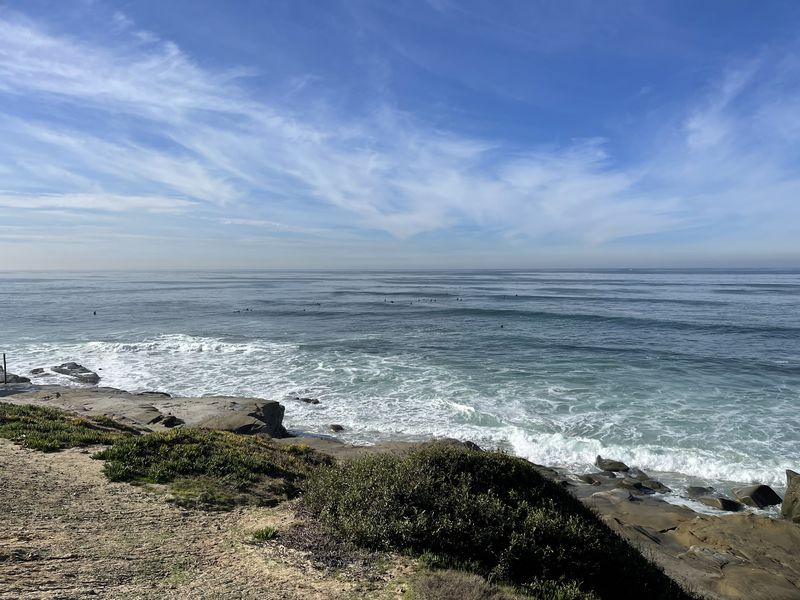

No account. Your sittings are kept in this browser, and nothing is sold on the way. The gate is a threshold, not a lock: if you have already settled, walk through.
One breath, counted, by the creek. The Stone Breath, the practice the first book is named for.
Opens with your first sitting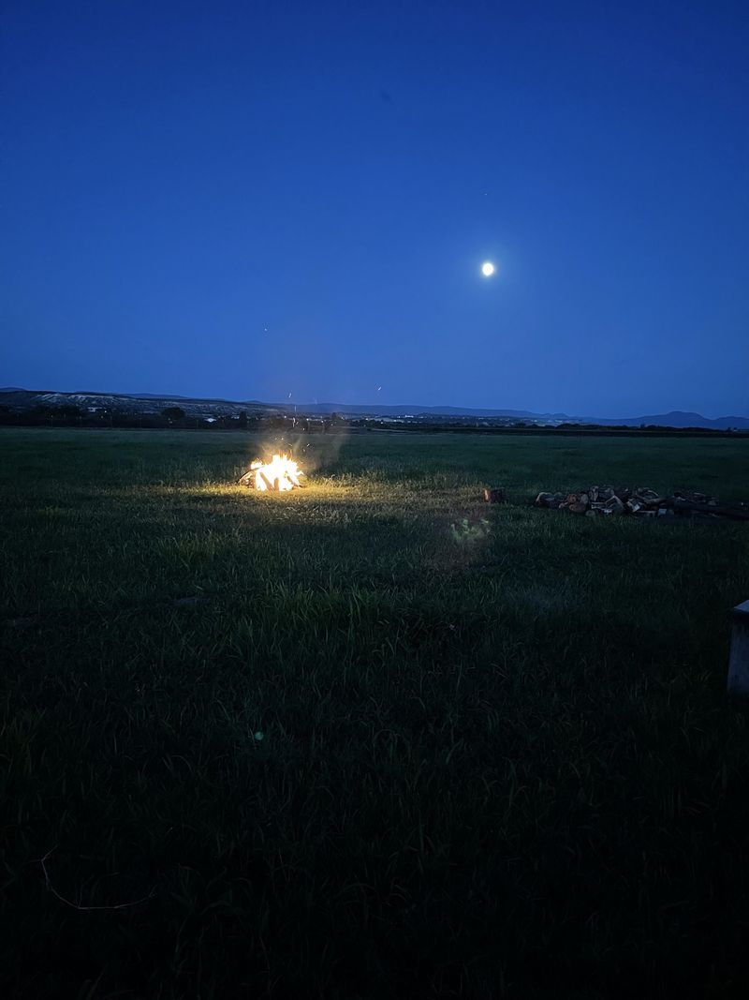
Seven mornings. The stone in the hand, the record of hard things you came through.
After seven morningsA month of returning, several mornings a week. The eight weeks, one training at a time.
After a month
Held with others who kept the practice. The deep studies and the live voice.
When the crossing is heldLive it imperfectly and daily rather than perfectly and never. Four movements, the way the carriers kept them.
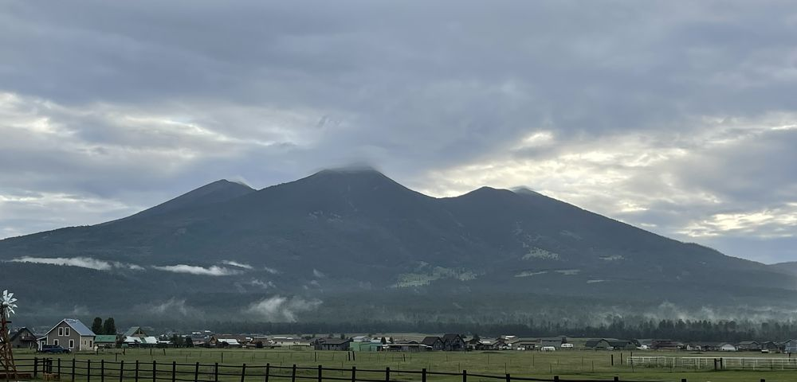
Rise before the noise. Set the frequency before the day sets it for you. Name what is already given until the body believes it.
A meadow at 5:39 in the morning. The Peaks before the cloud lifts.

Soften the eye when friction rises. Refuse overburden; hand one thing to the circle. One act of honor, daily.
Water over boulders in March. A runner on the sand road, carrying the next leg.
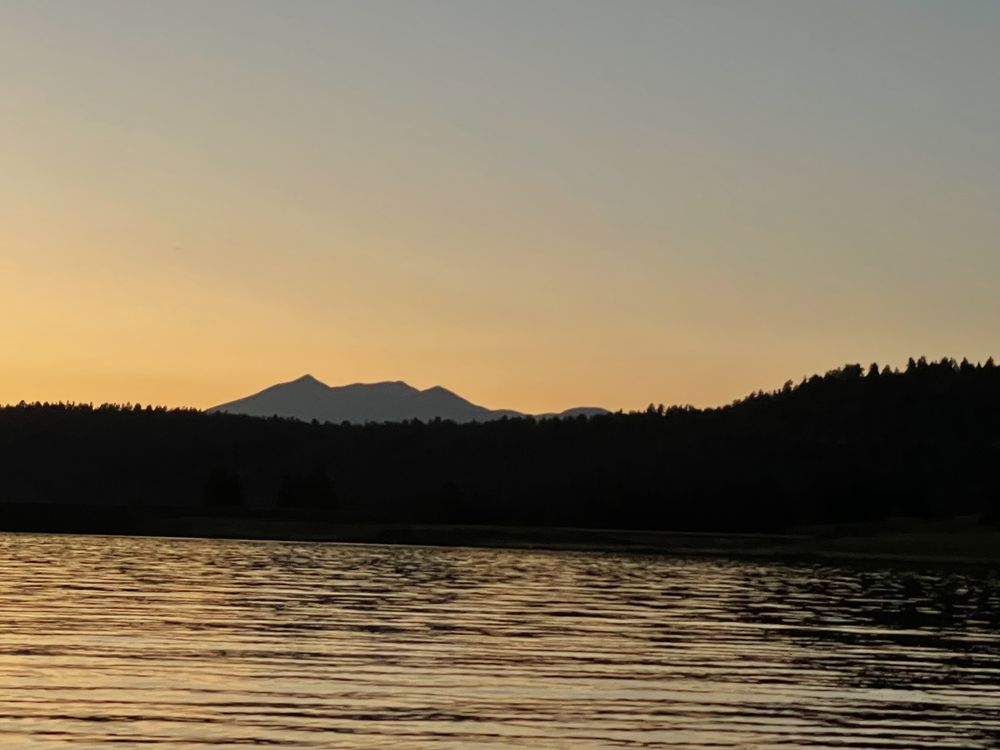
Three lines: what I carried, what I learned, whom I honored. Release the day's scarcity moment. Say it the other way.
The Pacific at 7:53 in the evening. The lake at 7:19, with the mountain gone dark.

One real circle or kin call. Hands on a craft. Hours on the land, no screen. One hour of deliberate nothing.
A hand on the wool. Hands at the braid.
One training a week, in the order every tradition used. Regulate the operator before you read anything. Then find what holds, store it, check it, share the load, bring it home, and tie it to something that returns.
1Settle the carrier first: the record of hard things you came through, the stone, the whole horizon when it gets bad.
Week one · with TonasSteer by the house, not the star that climbs out of reach.
Week two · with Nalu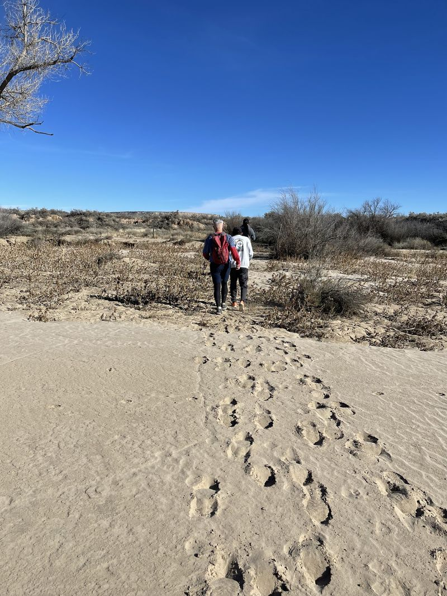
3What the storm took, and what stayed true underneath it.
Week three · with Satoshi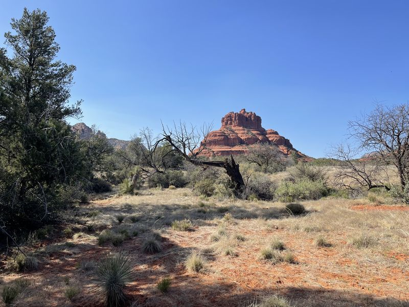
4Put what you must carry into a road your feet already know.
Week four · with Chariya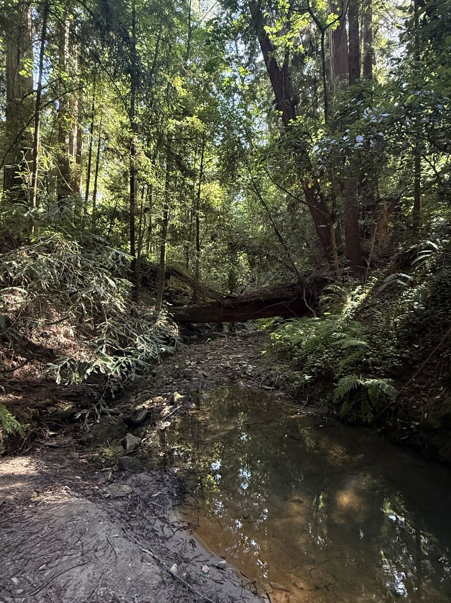
5Stop tracking the noise. Start mapping the holes.
Week five · with AoiNobody carries the whole way. The written specifics and the spoken meaning, said back.
Week six · with Illary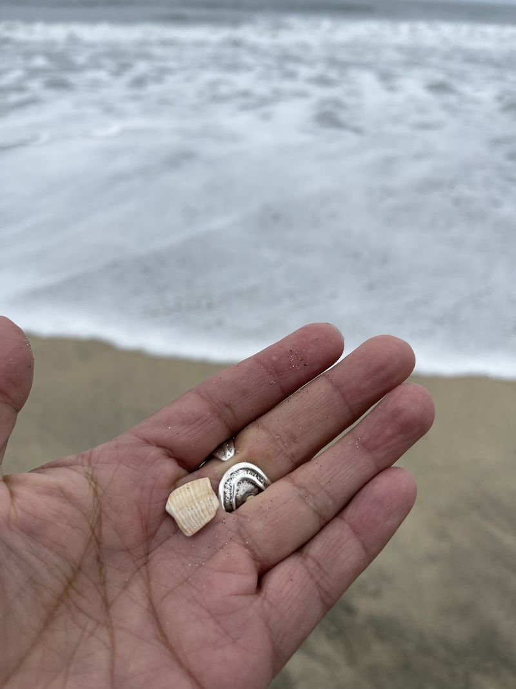
7Record the one who holds it, make two copies, use it once out loud.
Week seven · with Austėja 8
8Make the year ask: tie it to something that already returns.
Week eight · with KipronoThirty seconds of each session, over a bed of water, wind, ocean, desert or fire. Press play and the picture under the title breathes with the voice. Two open in full with a free sign-up; members hear every one.
The Flagstaff waterfall, June. Every clip on this page is our own.
Short ones, a minute each, from his talk to a room of students in October: the runner, the navigator, the breath under sixty beats. Thirty seconds of each plays here; members hear them whole.
The long ones and the short ones, for the morning, the drive and the night. Thirty seconds of each plays here.
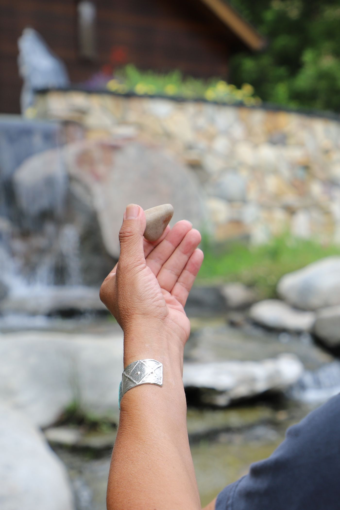
Twelve peoples, twelve tokens, one fire: the governance readings come from the third book. The tokens gather as you scroll.
Six readings for a leadership team or a board. Each one holds a passage, the principle, questions for the room, and one practice for the quarter. Nothing sacred is in them. Only what works and belongs to no one.
Markets, products and roles are stars: low and useful for a while, then they climb out of reach. The house is what the company is actually for.
Nobody carries the whole way. Keep the legs short and put the engineering into the hand-off.
A frightened room cannot think. Settle the room before anything is decided, and say the decision back before anyone leaves.
Will this make the great-grandchildren whole, or will it hollow them out? Leaders recognized, not campaigned for.
Wanting is not a feeling. It's a heart rate. A mind rehearsing lack misreads the ground it is crossing.
Composure is a reserve, built on quiet days and spent on hard ones. Read the weather, not the insult.

Each book opens a door here. The Stone Breath is the first book's practice, counted above with the creek. The eight weeks follow the disciplines of the second. The readings for your work come out of the third. The books, and what each one opens here.

A story of remembering, and the breath counted on a river pebble: in four, hold four, out six, hold four.
Book one · the Door
Seven days at a world congress, and the seven disciplines the carriers trained. The eight weeks follow them.
Book two · the Crossing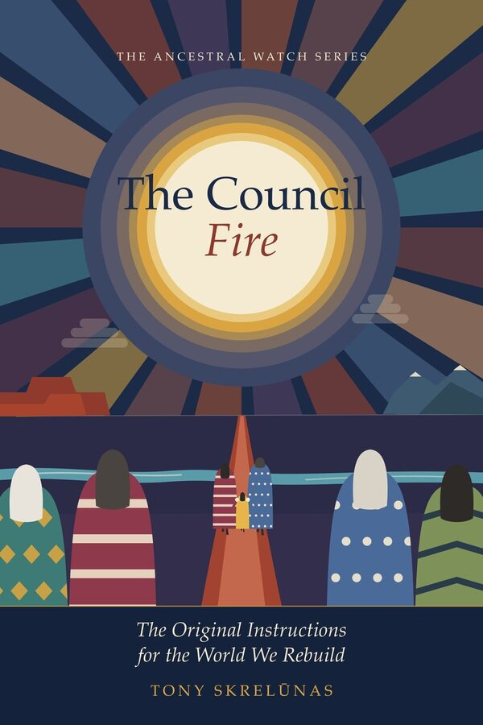
The original instructions for the world we rebuild. The readings for goals, structure, meetings and governance come from here.
Book three · the CouncilEvery photograph and every second of film on this page is our own: the canyon, the creek, the Peaks, the coast, the fire. The tiles change while you watch.

The membership is the companion to the books. Inside are the far messenger writings, the films, the sessions, short and long, the writings from the books, and first word of the workshops at Rancho La Puerta and 1440.
Any of the three. The last page of your book carries a word; type it in and the first month is yours, then it is $12 a month.
Come in with the book →Membership keeps this work going and carries it to the ones who come after. It opens every session and voice note in the Listening Room in full, the Eight Weeks, the films and the readings from the books.
$79 a year, or $12 a month. Two sessions stay free when you leave your name and email.
Join for $79 a year → Or $12 a month →Safe to join, easy to leave. Your card is handled by Stripe inside Payhip's secure checkout and never reaches us. Cancel anytime, on your own, from your account: Settings, then Subscriptions. No email to write, no one to call.
Either door opens the same room.
Come back in the morning. The line changes, the photograph changes, and the count stays the same: in four, hold four, out six, hold four.